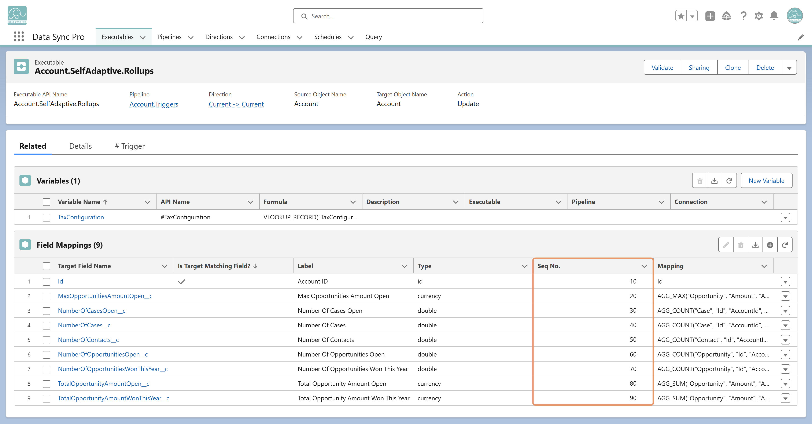

You can control evaluation order using the Seq No. column in Field Mappings
In the Executable, open the Related tab.
Find the Field Mappings related list.
Edit the Seq No. values inline to set the evaluation sequence.
Save your changes.
When Seq No. is defined, DSP processes mappings in that order. If the
source and target are the same record, transformations are
accumulative—so a field's output can be used in subsequent
transformations. You may also use
EVALUATED_FIELD_VALUE to reference the value of
a target field from a prior evaluation.
